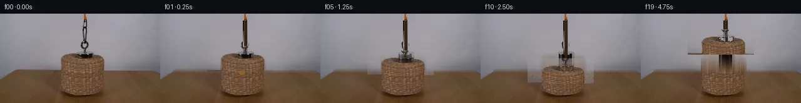

![首帧]()

Round 00
2026-11-06T11:36:52.005989+00:00像素候选变化代码 +465/−0inspection 更新
pixels d7e7cb6b1fef92ff · code 999ecf3ceb5e7b23
查看本轮 generate.py 真实 diff
--- previous/generate.py
+++ current/generate.py
@@ -0,0 +1,465 @@
+#!/usr/bin/env python3
+"""generate.py — Generate 20 RGB frames (256x144) for the PixelWorld-Text task.
+
+Scene: A woven basket hangs from an orange cord attached to a strong magnet.
+The basket descends to cover an orange tennis ball on a table, then lifts to the top of the frame.
+
+Method: Inpainting + sprite compositing with analytic motion curves.
+- Frame 00 is an exact copy of first_frame.png.
+- A clean background is created by inpainting the basket/cord/magnet region using
+ bilinear interpolation from surrounding wall and table colors.
+- The basket sprite is extracted from frame 00 and composited at animated positions.
+- The cord is redrawn analytically as a vertical line from magnet to basket top.
+- The tennis ball is rendered as a small circle on the table, hidden when covered.
+"""
+
+import numpy as np
+from PIL import Image
+from pathlib import Path
+import sys
+
+# Add workspace to path for artifact_io
+sys.path.insert(0, str(Path(__file__).parent))
+from artifact_io import save
+
+CASE_DIR = Path(__file__).parent
+H, W = 144, 256
+
+
+def load_first_frame():
+ """Load first_frame.png as uint8 RGB array."""
+ img = Image.open(CASE_DIR / "first_frame.png")
+ arr = np.array(img, dtype=np.uint8)
+ assert arr.shape == (H, W, 3), f"Expected (144,256,3), got {arr.shape}"
+ return arr
+
+
+def create_clean_background(arr):
+ """Create a clean background by inpainting the basket/cord/magnet region.
+
+ Strategy: For each column, interpolate wall/table colors vertically,
+ filling the gap left by removing the basket and cord.
+ """
+ bg = arr.copy().astype(np.float64)
+
+ # Define the region to inpaint: where basket, cord, and magnet are
+ # Basket: rows ~52-92, cols ~78-178 (slightly expanded for safety)
+ # Cord + magnet: rows ~0-64, cols ~131-139
+
+ # Create a mask of pixels to inpaint (object region)
+ # Use color-based detection: warm brown tones in the central area
+ r, g, b = arr[:, :, 0].astype(float), arr[:, :, 1].astype(float), arr[:, :, 2].astype(float)
+
+ # Identify object pixels: significantly warmer/more saturated than wall
+ # Wall mean ~(154,152,159), table mean ~(97,75,52)
+ # Objects have R>G+8 and G>B+3 and are above the main table area
+ obj_mask = (
+ (r > g + 6) & (g > b + 2)
+ & (np.arange(H)[:, None] < 93) # above table body
+ & (r > 80) # bright enough to be basket/cord/magnet, not dark shadow
+ )
+
+ # Also mask the cord path (thin vertical dark line)
+ # Cord: dark pixels in the vertical path from magnet to basket
+ cord_mask = (
+ (np.arange(H)[:, None] >= 8)
+ & (np.arange(H)[:, None] <= 62)
+ & (np.abs(np.arange(W)[None, :] - 136.0) <= 2.5)
+ & (r + g + b < 350) # darker than wall
+ )
+
+ # Magnet mask at top
+ magnet_mask = (
+ (np.arange(H)[:, None] <= 10)
+ & (np.arange(W)[None, :] >= 132)
+ & (np.arange(W)[None, :] <= 140)
+ & (r > g + 10)
+ )
+
+ full_mask = obj_mask | cord_mask | magnet_mask
+ # Expand mask slightly for clean edges
+ from scipy.ndimage import binary_dilation
+ try:
+ full_mask = binary_dilation(full_mask, structure=np.ones((3, 3)), iterations=2)
+ except Exception:
+ # Manual dilation
+ dilated = full_mask.copy()
+ for _ in range(2):
… diff truncated; 378 more lines …